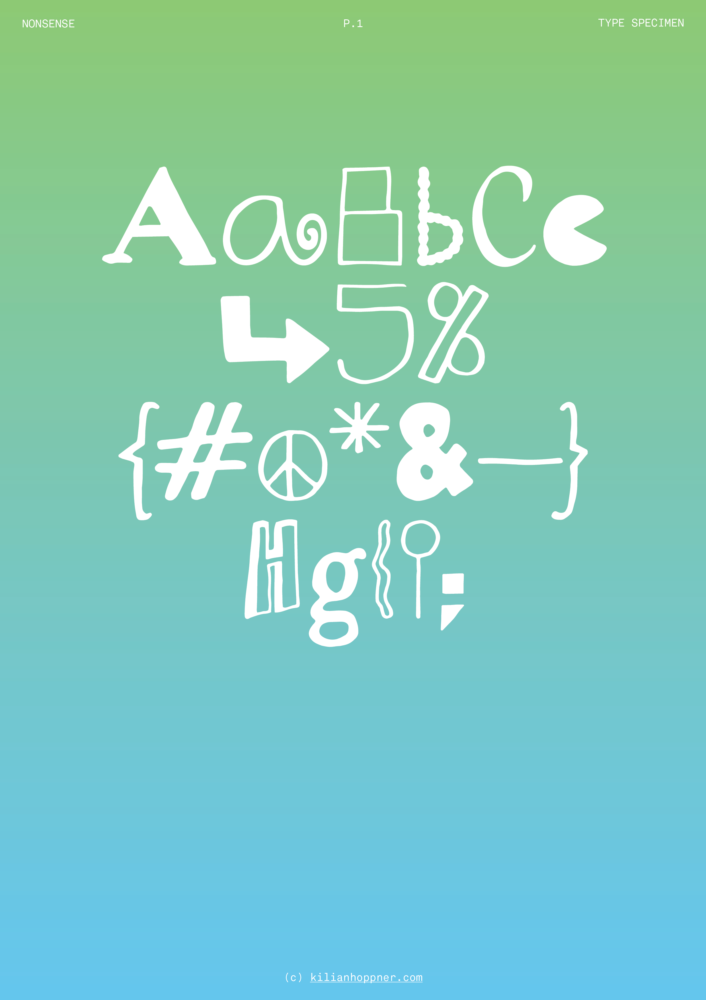
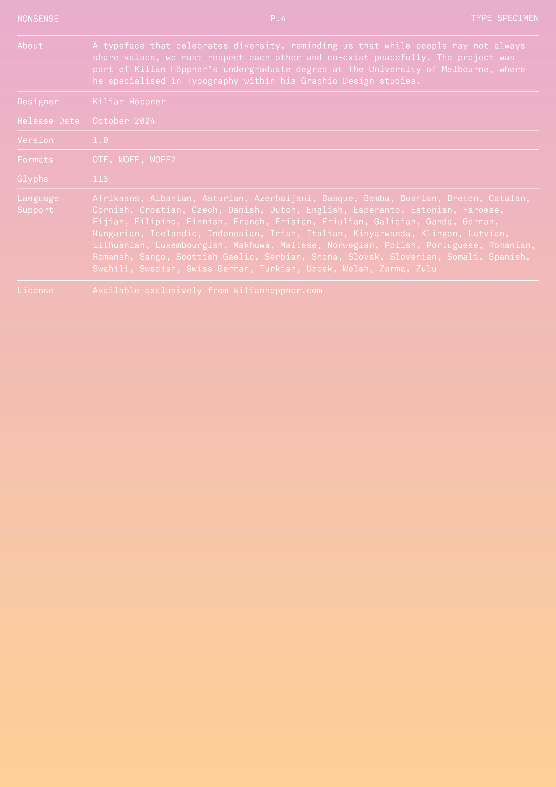
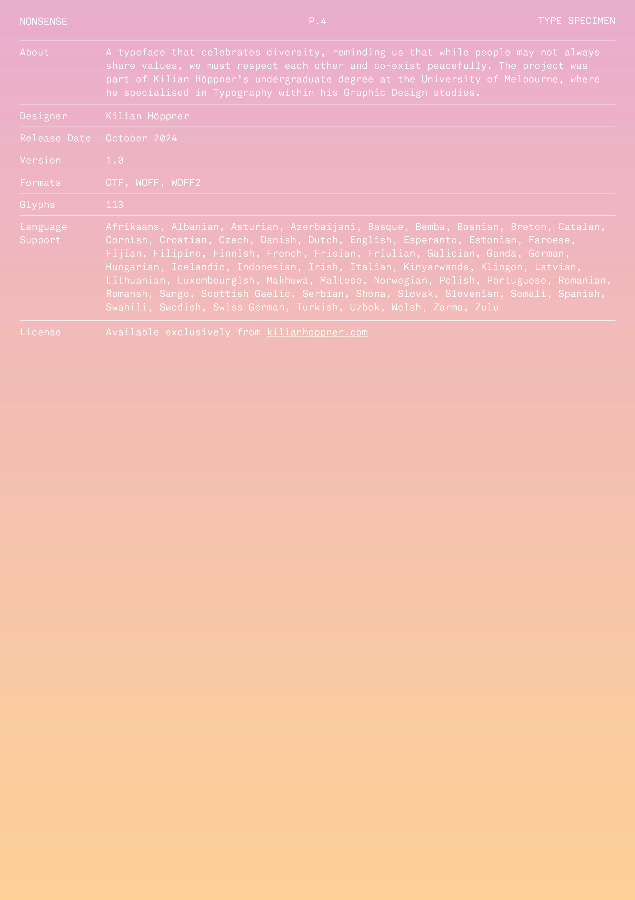
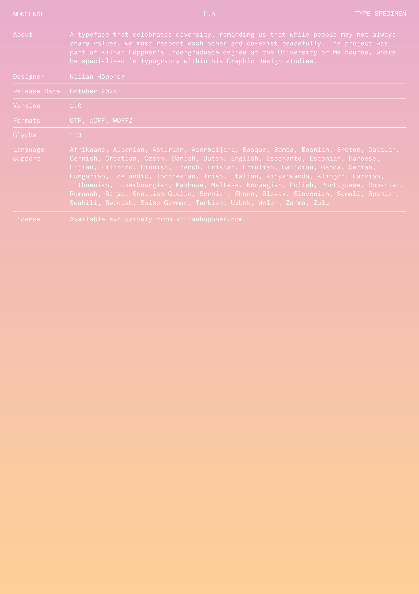

Nonsense is a typeface initially created for a rebrand of The Big Issue Australia. Each glyph has unique characteristics, celebrating diversity and reflecting the distinct attributes of cultures in society. By creating a typeface filled with juxtapositions, imperfections and anomalies, I aim to highlight that while people may not always share values, we must respect each other and co-exist peacefully, to create a more sustainable and inclusive future. By applying the typeface on multi-coloured gradients in my type specimen design, I emphasise our inherent interconnectivity and encourage community building over mass polarisation.


 

